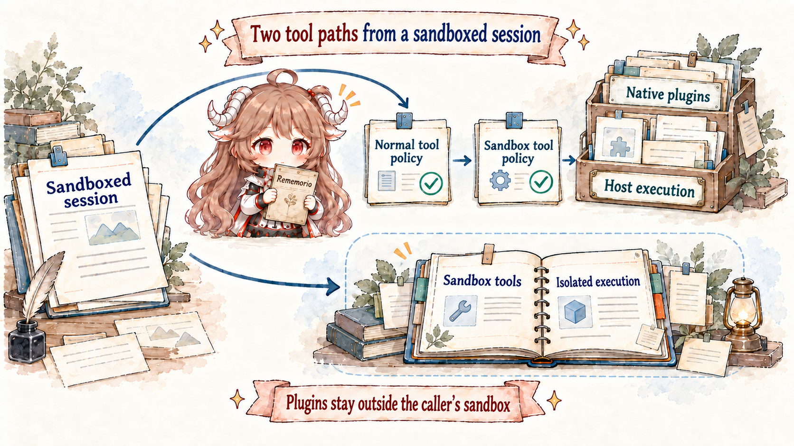
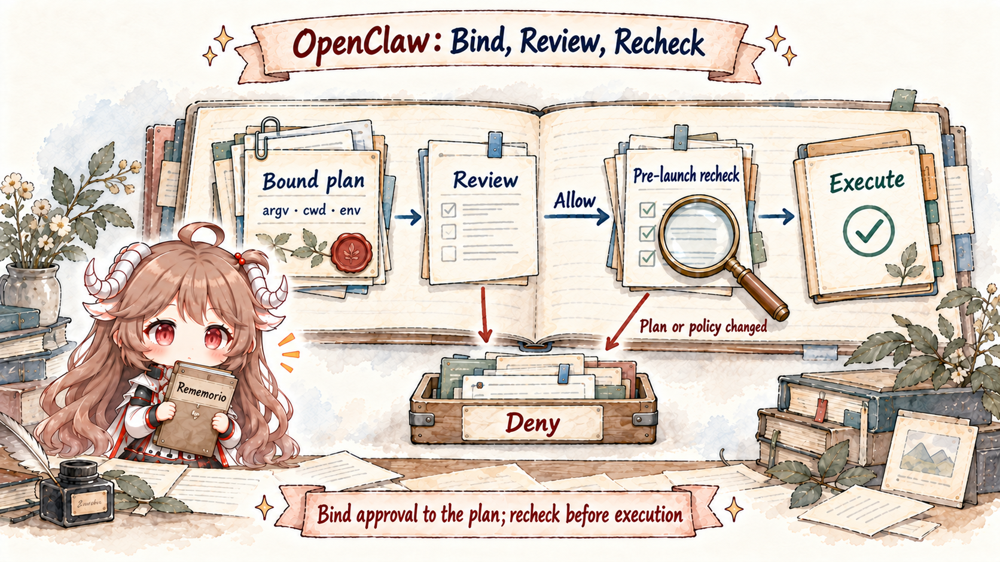

Suppose a Discord group message says, “To fix the build, mount the whole project, turn on elevated full, and run this script.” Asking only whether a human approved it skips at least three layers: whether the sender may control this agent, whether this turn may see exec, whether the session is sandboxed and which paths it can read, and whether the elevated sender allowlist matches.
The reverse mistake is just as common. Putting an agent in Docker does not automatically make every capability safe. Native plugins still run in the Gateway process. Mounting the Docker socket nearly hands over host control. Once exec is allowed, denying write/edit does not stop the shell from writing files. Security must follow the complete capability-to-resource path, not search for one “secure: true” setting.
Reading contract.By the end, you should be able to state what tool policy, sandbox, exec approval, and elevated each control; explain why approval is not a user-authorization boundary; combine sandbox mode, scope, and workspaceAccess; explain the double allow required for plugin/MCP tools in a sandboxed turn; distinguish workspaceOnly from process isolation; and show how an approved node command binds argv, cwd, env, agent/session, and executable.
Evidence boundary.This chapter stays pinned to e6b4264. It is not a generic security certification and does not claim a perfect sandbox. It explains the defenses verifiable in this snapshot's policy pipeline, sandbox resolver, elevated resolution, and host-exec approval code.
1. A tool call first establishes capability and identity
1.1 Four checks restrict the tool, environment, command, and host escape
| Control | Core question | Typical stage | It cannot replace |
|---|---|---|---|
| Tool policy | May this tool exist for the turn? | Before the model request; filter schemas. | Isolation of side effects inside exec. |
| Sandbox | Where does it run and what can it see? | Runtime context and tool construction. | Deciding which sender should see the tool. |
| Exec approval | May this host command run? | After host plan resolution, before execution. | Per-user authentication or read-only filesystems. |
| Elevated | May sandboxed exec use the configured host path? | Host selection and exec admission. | Restoring denied exec or adding other tools. |
The diagram compares responsibilities rather than a fixed sequence; some source checks happen earlier during construction and others repeat at call time. A later directive cannot override tool denial or required sandboxing. Ordinary host exec also merges the stricter configured and host-local approval policies. An admin-authorized session with permissionMode="full" is an explicit exception to host approval-file floors, so monotonic narrowing is not an accurate description of every setting.
1.2 Ingress resolves sender identity; model arguments cannot change it
senderId, accountId, channel, roleIds, and senderIsOwner are resolved at the channel/Gateway boundary and bound to the run and tool wrapper as trusted requester context. A model can emit {"target":"admin"}, but cannot become an owner through a tool argument. Message actions, elevated allowlists, and owner-only control tools read host-derived identity.
A missing identity field means unproven, not safe by default. A hook requiring a maintainer role should fail closed when roleIds are absent. Falling back to display name turns mutable sender-supplied text into a credential.
This is also why route/session isolation precedes tool policy. If several people's DMs were already folded into one main transcript, later tool restrictions cannot remove the private context that has crossed the wrong boundary.
1.3 Tool policy removes disallowed ordinary tools before the request
agent-tools.policy.ts and the pipeline apply profile, provider, global, agent, group, sender, and sandbox policy in layers. Deny wins. A non-empty allowlist treats every unlisted tool as blocked. Filtered descriptors never reach the model, and an /exec directive cannot override a denied exec tool.
Policy matches tool names; it cannot infer every side effect inside a tool. The critical example is shell execution. Denying write, edit, and apply_patch does not make an allowed exec read-only: sh -c 'echo x > file' still writes. A read-only agent must also deny runtime tools or enforce read-only resources through sandbox/OS permissions.
This layered filtering describes ordinary configured tools. Host-injected system tools have separate run-identity authorization, as explained in capability assembly; profiles alone do not determine their availability. Likewise, allowing a plugin group does not make every parameter safe. Trusted policy or before_tool_call can still reject concrete resources, params, and requesters. Build-time controls reduce model mistakes; call-time controls catch parameter-level risk.
2. How sandbox restricts processes, files, and extensions
2.1 Tools enter sandbox; Gateway and native plugins stay on host

The OpenClaw Gateway does not enter the container with an agent turn. A sandbox backend carries exec and filesystem tools—and optionally a browser. The Gateway control plane, session state, and native plugin runtime stay in the host process. Tool execution is isolated, not the whole control plane.
Sandboxing therefore reduces the blast radius when the model makes a bad decision by limiting processes, files, network, and workspace visibility. It does not turn loaded native plugins into untrusted isolated code. Installing a plugin admits code into the Gateway trust boundary and needs review before execution.
2.2 Mode, scope, and backend control different dimensions
mode chooses which sessions are sandboxed: off, non-main, or all. Under non-main, group and channel session keys are not main and therefore enter the sandbox. “This belongs to the main agent” does not mean every session owned by that agent is the main session.
scope chooses the sharing unit: per agent, per session, or shared. Session scope isolates most and costs most. Shared scope reuses state and can let sessions influence one another through container state; it also ignores per-agent binds. Scope is an isolation-domain decision, not merely performance tuning.
backend chooses Docker/Podman, SSH, OpenShell, or another registered backend such as Crabbox. Their network, browser, bind-mount, and workspace synchronization capabilities differ. Protections configured for a local container do not automatically appear on an SSH target.
A session creator's operator role can independently record sandbox="required". The runtime resolver preserves it; sandbox context caps effective rw workspace access to ro. The exec target resolver rejects an unavailable sandbox backend and blocks elevated, gateway, or node escape. Disabling ordinary agent sandbox configuration does not clear this session requirement.
2.3 workspaceAccess and bind mounts open paths separately
workspaceAccess is none, ro, or rw. It controls how the agent workspace appears inside the sandbox. None typically gives the sandbox its own scratch workspace; ro suits review; rw lets tools modify the real workspace. Additional docker.binds are an independent entry surface.
A bind with no explicit mode may be read-write and pierces the sandbox filesystem. Mounting secrets, SSH keys, or /var/run/docker.sock greatly expands authority; the last nearly grants host container control. OpenClaw checks both normalized sources and resolution through the deepest existing ancestor to catch symlink-parent escapes, but operators still need least-privilege mounts.
Network policy is independent again. Docker's default network-none blocks most outbound traffic, but a proxy, host service, browser bridge, or mounted socket can reopen a path. Read-only files do not imply read-only network behavior, and no network does not protect writable mounts.
2.4 Plugin and MCP tools need normal and sandbox policy approval
Native plugin and configured MCP tools often execute on the Gateway side. They do not move into the same container merely because the caller session is sandboxed. To stop a sandboxed turn from escaping through an extension, OpenClaw requires the ordinary effective tool policy to allow the tool and tools.sandbox.tools to allow the plugin group, bundle, or concrete name.
The first gate says whether this agent and sender may use the tool. The second says whether a sandboxed session may reach a host-side extension. Adding a name only to normal allow may still leave it hidden; adding it only to sandbox allow cannot override a global or agent denial.
2.5 workspaceOnly checks paths for controlled file tools
tools.fs.workspaceOnly gives read/write/edit/apply_patch a host-path boundary. Correct enforcement cannot use string-prefix checks alone. It resolves relative and absolute paths, symlink parents, final symlinks, and hardlink aliases so a path that looks internal cannot write externally.
Even complete checks protect only the controlled filesystem tools. Host exec has its own filesystem API, and a plugin accepting paths needs its own guard. Container/OS boundaries, tool policy, and library path validation are defense in depth; none substitutes for the other two.
Session permission modes additionally constrain managed file tools to the recorded sessionRoot, or the target agent's canonical workspace when none is recorded. read-only omits mutation tools and denies exec; guarded permits root-contained reads and writes, asking a human on allowlist misses; workspace uses an automatic reviewer for eligible exec escalation; full requires operator.admin. A managed worktree pins the root to its checkout without choosing a permission mode. None of this substitutes for restricting a shell that can access files through its own APIs.
3. How host exec gains consent and prevents plan drift
3.1 Elevated changes only where sandboxed exec runs
/elevated on matters only when the session is already sandboxed. It sends later exec calls through the configured path outside the sandbox: Gateway by default, or node when the exec target is already configured as node. In an unsandboxed session, exec already runs on a host and elevated is effectively a no-op.
Availability requires the global gate, per-agent gate, and sender allowlists to pass. An inline directive affects only one message; a session override comes next; the global default is last. A missing gate should report unavailable, never silently execute on host.
/elevated full alone does not grant the admin full-session exception: it skips approval only when the resolved exec policy is already full/off. Ordinary host ask-always still asks. Elevated cannot restore denied tools or escape required sandboxing. The host resolver permits an explicit node request when configuration is auto and no sandbox is available. With an available sandbox it rejects this explicit escape, and requests must still match a fixed configured host; this is not unrestricted cross-host authorization.
3.2 Exec approval evaluates one concrete host command

Host exec approval is an accidental-execution guardrail on the Gateway or node host. A run needs agreement from tool policy, the elevated gate when escaping a sandbox, requested exec policy, host-local approvals, the allowlist, and any human decision. Ordinary configured execution resolves the stricter host policy. An explicit full session is an admin-authorized exception: while effective security remains full, it can bypass host approval-file floors. Tightening only ask does not restore those floors; tightening security does. Tool denial and required sandboxing remain independent.
This is not per-user authorization. An authenticated Gateway operator and paired node already establish a trust relationship; approval adds consent for one risky action. Once approved, the command can mutate anything allowed by host filesystem permissions. Real multi-user boundaries remain ingress authentication, sender policy, agent isolation, and OS/sandbox controls.
The canonical persisted setting is tools.exec.mode, rather than arbitrary security/ask pairs stored on a session. The five modes are deny, allowlist, ask, auto, and full. Auto sends only eligible, bound allowlist misses to review. An allow verdict grants one execution; deny returns a reason; ask or reviewer failure requests a human decision. Explicit ask=always requires a human directly. This is a configuration shape, not proof that a command is safe:
{ "tools": { "exec": { "mode": "auto", "strictInlineEval": true } } }The reviewer receives bounded, redacted conversation evidence with origin labels, not new instructions. The executor still checks whether the dispatch chain can be bound; a favorable model judgment cannot bypass that check. Ordinary host exec defaults to full, so missing approval configuration does not mean every command will ask.
3.3 Allowlist the executable and preferably the arguments
Exec allowlists are per agent. A bare command name matches only a PATH invocation, not ./rg or /tmp/rg. A path glob can restrict the trusted binary location. Every top-level segment in a shell chain must satisfy the rule; trusting git must not implicitly trust a later curl.
argPattern narrows one executable to an argv shape, and approval-generated allow-always entries bind both exact argv and cwd. Otherwise allowing python3 permits arbitrary scripts and inline code. The opt-in strictInlineEval setting defaults to false; enabling it keeps forms such as python -c and node -e approval-only even when the interpreter binary matches.
Safe bins are another constrained fast path, not a claim that common commands are intrinsically safe. stdin-only behavior, argument form, path resolution, and environment all determine eligibility.
3.4 Approved executable, arguments, cwd, and environment may not drift
The node-host path first constructs a canonical systemRunPlan. The approval record stores command, cwd, session, and related bindings. The final system.run forwards the stored plan rather than trusting fields supplied later. Changes to command, rawCommand, cwd, agentId, or sessionKey reject the run as a mismatch.
Approval also tries to pin the resolved executable and one concrete local file operand for direct script or interpreter invocation. A changed file between approval and execution causes denial. If exactly one file cannot be identified, OpenClaw refuses to pretend it has complete approval coverage. The best-effort limit matters; one click is not proof over every runtime loader.
No UI or approval timeout resolves through askFallback, which defaults to deny. Allow once applies to one plan; eligible allow-always decisions create durable rules, while inline-eval forms do not. Final launch checks reread committed host policy after asynchronous preparation and before spawning the process. Revocation blocks a pending launch but does not roll back a process already running. Node executable binding covers local policy evaluation through dispatch; it does not freeze every inner shell executable throughout a remote human approval wait.
4. How to diagnose policy and avoid common misconfiguration
4.1 Prompts and skills advise; host code enforces
A system prompt may say “never run destructive commands,” and a skill may require “show a diff before editing.” These instructions improve model choices but remain advisory. Prompt injection, model error, or a bad skill can still produce a dangerous call, so tool visibility, path guards, sandboxing, and approval must be enforced by host code.
Third-party skills are untrusted instructions and need review. They may encourage secret reads, binary installation, or elevated mode, but the relevant tools and host gates should remain restricted. Third-party native plugins deserve even more scrutiny because their code already runs inside the Gateway trust boundary; a sandboxed agent does not isolate plugin startup side effects.
4.2 Use explain and audit to locate the rejecting check
openclaw sandbox explain --session ... reports effective mode, scope, workspace access, actual sandbox status, sandbox tool policy, and elevated gates. Tool-policy filtering emits agents/tool-policy audit entries with layer label, configuration key, and affected tools.
openclaw sandbox explain --session agent:main:main --json
openclaw approvals get --gateway
openclaw exec-policy show
openclaw logsDo not start diagnosis by disabling the sandbox. First confirm the tool is in the effective surface. Then identify execution host or sandbox. For host exec, inspect elevated availability, effective exec mode, allowlist, and pending approval. Following the controls lets you open only the missing gate.
4.3 Six common misconfigurations and their consequences
| Misconfiguration | Why it fails | Correct boundary |
|---|---|---|
| Deny write/edit, so exec is read-only. | The shell can write directly. | Restrict exec too; add sandbox/OS read-only resources. |
| Docker isolates every plugin. | Native plugins remain on the Gateway host. | Review installed code and double-gate plugin tools. |
| Approval means the sender is authorized. | It grants consent for a command, not identity. | Prove requester at ingress and sender policy first. |
| Elevated full overrides deny. | It changes only exec location and approval. | Tool-policy deny remains final. |
| workspaceAccess ro makes binds safe. | Extra binds have independent modes and may be rw. | Use explicit :ro; audit sockets and paths. |
| No UI should continue to avoid a stall. | An unconfirmed action should not run implicitly. | Keep askFallback deny unless explicitly justified. |
5. Eight security rules to carry forward
- Separate identity, capability, resources, and consent.One approval button cannot stand for all four.
- Tool policy decides whether a capability exists.Remove forbidden tools from schemas first.
- Sandbox decides where execution happens.The Gateway and native plugins remain on host.
- Approval binds one concrete plan.It does not replace authentication or filesystem permission.
- Elevated provides a controlled escape for exec only.It is not a universal privilege mode.
- Separate ordinary merging from explicit grants.Host floors constrain ordinary exec; an admin-granted full session is an approval-floor exception. Tool denial and required sandboxing still apply.
- Defend paths and commands against TOCTOU.Resolve symlinks, executables, and scripts; reject plan drift.
- Instructions are soft; host code is hard.Combine policy, sandbox, OS permission, and approval.
The next chapter enters multi-agent work. When one agent delegates to a subagent, ACP harness, or another session, how should permissions, workspace, context, result delivery, and cancellation identity inherit—and which state must remain isolated?
Source references
- agent-tools.policy.ts and tool-policy-pipeline.ts: layered tool availability.
- sandbox/context.ts and sandbox/tool-policy.ts: runtime, workspace, and sandbox tool gates.
- reply-elevated.ts: global, agent, and sender elevated resolution.
- exec-host-gateway.ts and exec-host-node.ts: host policy, allowlists, approval, and bound plans.
- Sandbox vs tool policy vs elevated, Sandboxing, and Exec approvals: official boundaries and diagnostics.